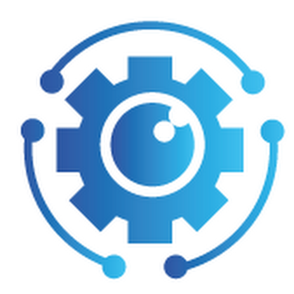

GeniusMarket · Boulogne-Billancourt
Avril 2026 – Juin 2026 · 6 semaines
Stage orienté développement web et mobile : participation à l’amélioration de sites existants (optimisation, mise à jour de contenus, amélioration du parcours utilisateur), évolution de la base de données et travail en binôme avec les développeurs sur des fonctionnalités d’application mobile.
- Développement web
- Optimisation de site & SEO basique
- Base de données
- Collaboration avec outils d’IA (prompting)
Ce que j’ai appris
Travail en équipe avec des développeurs, amélioration de la qualité de code, prise en compte des retours clients, et utilisation d’outils d’intelligence artificielle pour gagner du temps sur certaines tâches de développement.